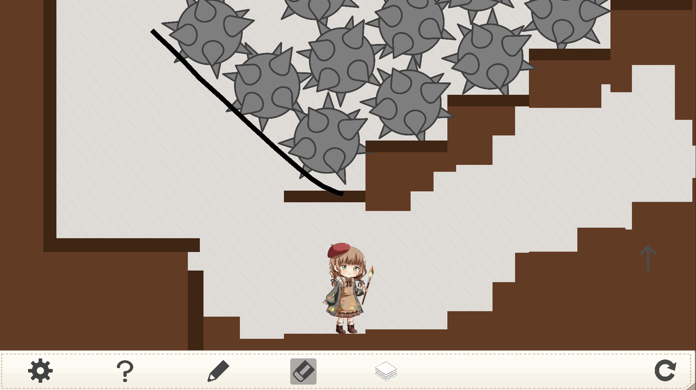
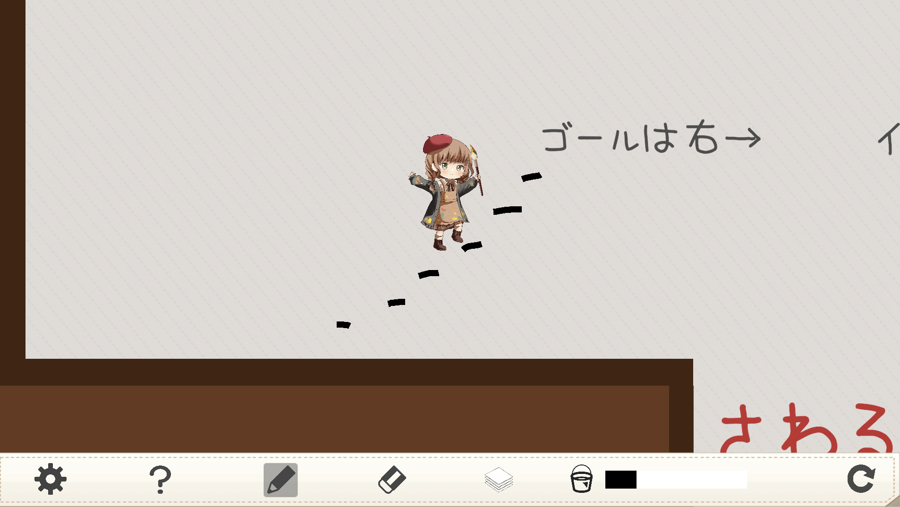
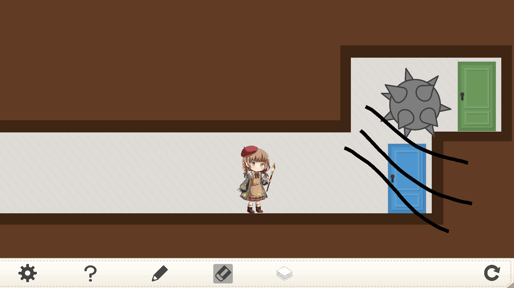
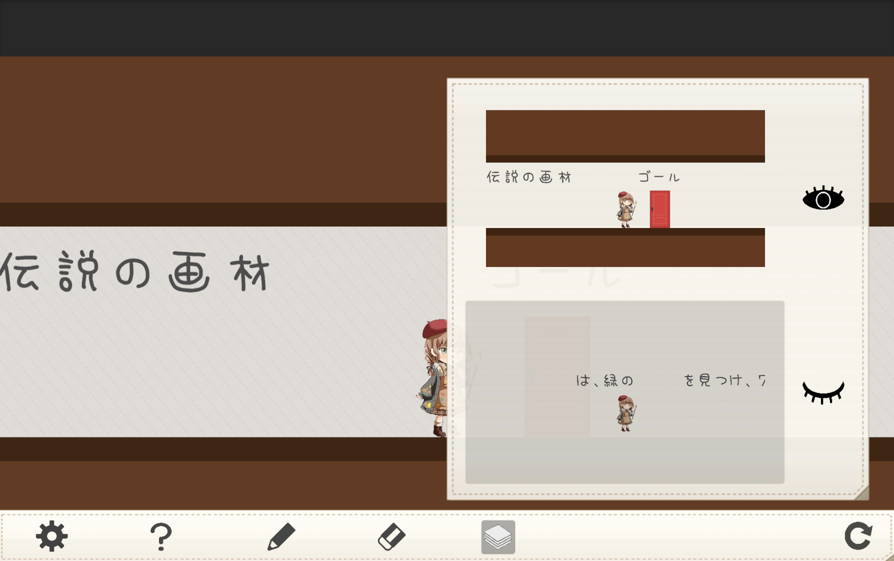
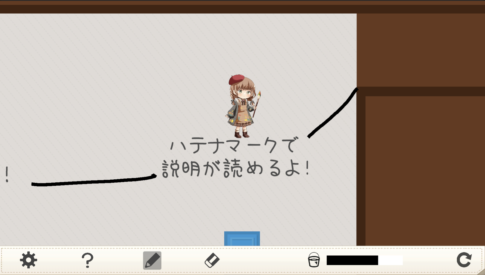
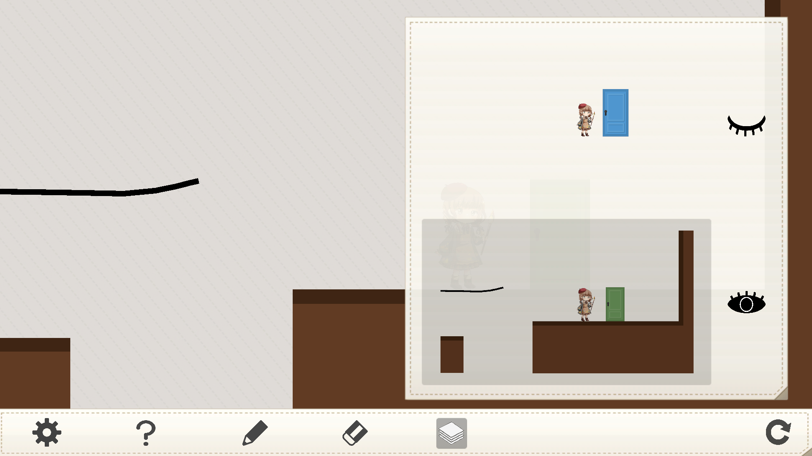
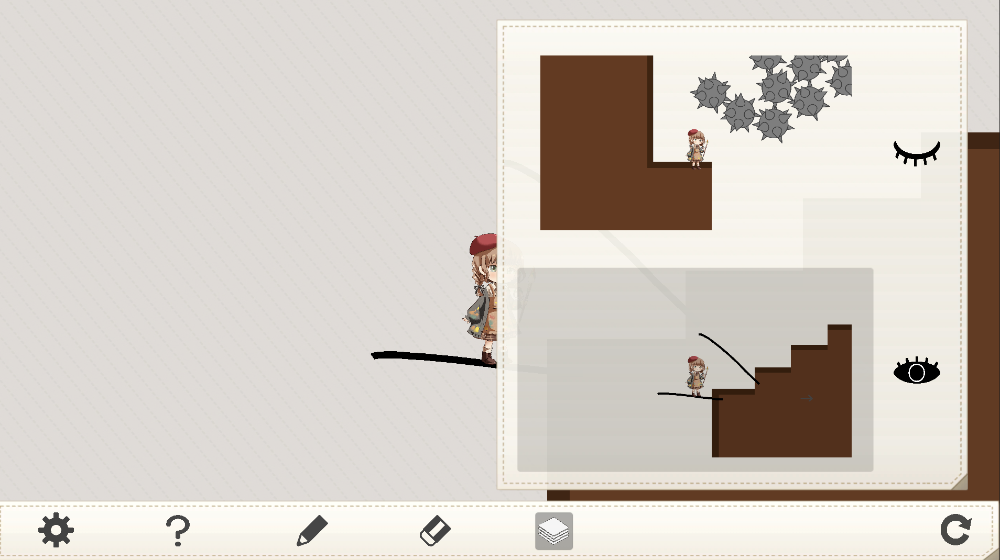
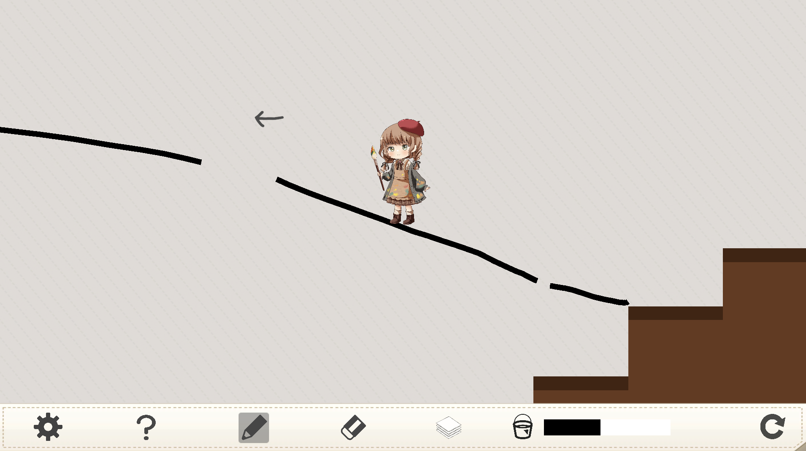
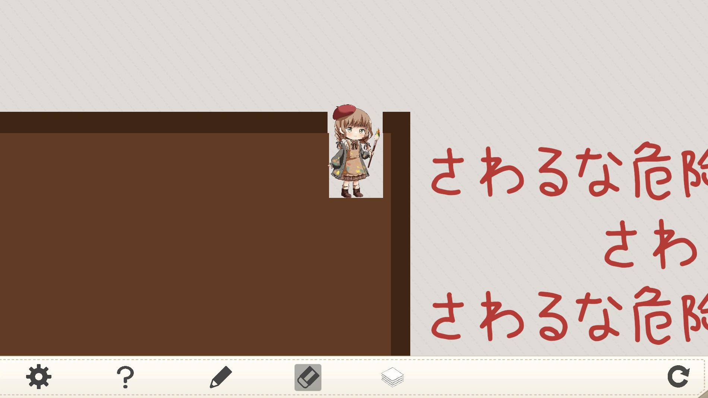
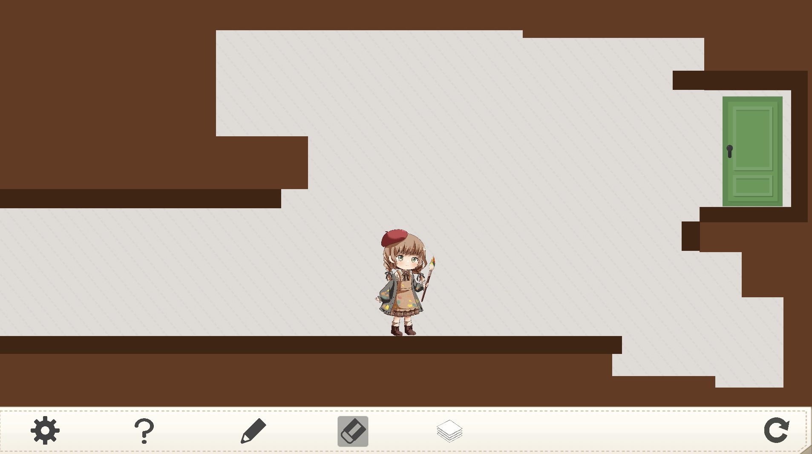

攻略に詰まったときにご覧ください！
上から順番に見ることをおすすめします！
ここで示すのはゲームの正解ではなく、1つの攻略法です！
色々なクリア方法があると思います！
通常クリア
ステージ 1
ヒント 1
ジャンプはスペースキーでできます！
もし詰んだら右下にあるリスタートボタンでやり直しができますよ！
ヒント 2
ゲーム画面下のツールバーにてペンを選択した状態で、マウスクリック&ドラッグをしましょう！
答えを見る
ステージ開始後、段差をジャンプで飛び越えると大きな穴がありますね。 ジャンプでは飛び越えられないので、ペンで足場を描いてその上に乗ることで穴を越えましょう！
ステージ 2
ヒント 1
ゲーム画面下のツールバーにて消しゴムを選択した状態で、マウスクリック&ドラッグをしましょう！
ヒント 2
どうやら消せるものと消せないものがあるようですね。手当たり次第消してみましょう！
答えを見る
初めの黒色の壁は消しゴムで消せます。次のピンク色の壁は消えませんが、ピンク色の壁の上の方は消すことができます！
さらに、文字が邪魔になる場合も消してしまいましょう！
ペンで上に登って右に行けばゴールです！ゴール手前の穴に落ちないように注意しましょう！
ステージ 3
ヒント 1
ステージ開始直後に鉄球が降ってきますね。どうにかして身を守れないだろうか……。
ヒント 2
鉄球はせき止めることができても、鉄球が多すぎて上から階段を通っていくことはできなさそうです。 押してダメなら引いてみる。上がダメなら……。
答えを見る
ステージ開始直後に鉄球が降ってくるため、素早くペンで線を描いて鉄球をせき止めます。 階段状になっている地面は消しゴムで消すことができ、地面を階段状に掘ることで右上に進んでいくことができます！右上にゴールがあります！

ステージ 4
ヒント 1
ペンにはインク制限があり、インクが切れると書けなくなってしまいます！ このステージはインクが少ないため、橋を描いて渡るのは厳しそうですね。 下には「さわるな危険」が大量にあって、下に行くのも厳しそうですね。
ヒント 2
進むための足場になりそうなものは、ないでしょうか？
答えを見る
ステージ開始直後「ゴールは右→」という文字があります。ここに乗りましょう！乗れたらあとは右に進めばゴールです！ なお、時間はかかりますが、インクを節約しながら極小の足場を描き、その上を渡ってゴールするというゴリ押しも可能らしいです（デバッグしていただいた方が、そのようにクリアしていてビックリしました）

ステージ 5
ヒント 1
邪魔なものは消しましょう！
ヒント 2
鉄球はペンで転がせます！さらにペンで持ち上げたりもできますよ！
答えを見る
1つ目の鉄球と黒い壁は消しゴムで消せるので消します。1つ目の鉄球はペンで転がしましょう！ 鉄球を右まで転がしきるとゴールの青扉がありますが、鉄球が邪魔でゴールに辿り着けません。 そこで、まず緑扉がある空間の黒い壁を消しゴムで消し、次に鉄球をペンで下から押すことで、 緑扉のある空間に鉄球を移動させましょう！すると、ゴールにタッチできます！

通常クリア後
まずステージ６から攻略することをおすすめします。
ステージ 6
ヒント 1
伝説の画材もどきの「レイヤー」を使うことができるようになりました！ 「レイヤー」の使い方は、ゲーム画面下のツールバーにあるハテナマーク「？」から確認できますよ！
ヒント 2
赤い扉に触れると強制的にSOSO-Endに飛ばされてしまうので、赤い扉に触れないようにしないといけません。 邪魔なものは……。
答えを見る
伝説の画材もどきである、「レイヤー」を手にいれたことにより、ゲーム画面下のツールバーにレイヤーが増えました！ レイヤーを開くと表示されるプレビュー画面では2つの世界が映っています。 今現在プレイヤーは2つあるレイヤーのうち、下のレイヤーにいます。 上のレイヤーをクリックすることで、プレイヤーは上のレイヤーにあるものに干渉することができます！ 消しゴムで赤い扉を消すことで、奥に進めるようになります！奥に進むと何もないかもしれませんが、ここでレイヤーを開くと、 ゴールの緑扉は2つあるレイヤーのうち下のレイヤーにあることがわかります。 そこで、レイヤーのプレビュー画面の右にある目が閉じているアイコンをクリックすると、目が開いたアイコンに変わり、下のレイヤーにあるものが見えるように・触れるようになります。

ステージ 1
ヒント 1
くまなく探索しましょう！
ヒント 2
右上……。
答えを見る
ペンで足場を作ったり文字の上に乗ったりして、ステージの右上まで行きましょう！右上に消しゴムで消せるところがあり、その奥にゴールがあります！

ステージ 2
ヒント 1
新しく手に入れた道具を使いましょう！
ヒント 2
邪魔なものは……。
答えを見る
通常ゴールの青色の扉の近くでレイヤーを開くと、どうやら青色の扉の後ろに緑色の扉があることがわかります。 青色の扉が存在しているレイヤーの目のアイコンをクリックして、青色の扉が存在しているレイヤーを見えなくしてしまいましょう！ また、他の解き方として、青色の扉が存在しているレイヤーを選択して、青色の扉を消しゴムで消すという方法もあると思います！

ステージ 3
ヒント 1
鉄球たちはどのレイヤーに存在しているのでしょうか？
ヒント 2
もう一度ステージをよく観察してみましょう。
答えを見る
ステージ開始直後に鉄球が降ってくるため、素早くペンで線を描いて鉄球をせき止めます。 鉄球が存在しているレイヤーの目のアイコンをクリックして、鉄球たちを見えなくしましょう！ ここで、地面も見えなくなる場所があるので、落ちないように注意！ ステージを観察していると、左矢印←を見つけることができます。 左矢印の方向に行くとゴールがあります！


ステージ 4
ヒント 1
レイヤーを使うと、今まで見えなかった文字が見えますね！
ヒント 2
どうやったら下に行くことができるでしょうか？邪魔なものがたくさんありますが、邪魔なものは……。
答えを見る
レイヤーを見てみると「ゴールは右→」に被せて「ゴールは下↓」となっています。つまり、「さわるな危険」の文字に触れないように下に行く必要があります。 下に行く方法はたくさんありますが、一番楽な方法のうちの１つが「さわるな危険」がたくさんある場所の手前の地面を掘ることです。地面を掘って下まで行き、右側に進むとゴールがあります！ 右側にゴールを見つけられない場合は、扉のあるレイヤーが見えるようになっているか確認してください！

ステージ 5
ヒント 1
レイヤーのおかげで、色々なものが消せますね。
ヒント 2
このゲームの中に存在する物体はプレイヤーを除き全て消せますよ！
答えを見る
レイヤーを使うことで、鉄球や壁は全て消せるので消します。 右側に進むと、青色の扉が邪魔で緑色の扉に入れません。そこで青色の扉も消します。あとは、ペンで足場を描いて緑色の扉にタッチしましょう！

ステージ1から6までクリアしても何も起きない場合
ヒント 1
ステージ6に描いてある文章をよ〜く読みましょう！
ヒント 2
ステージ6には「7」つのステージで緑扉に入れと書かれていますね。しかし、今存在しているステージは6つ……。
答えを見る
ステージセレクト画面でレイヤーを開くと、虹の後ろにステージ0が隠されています。虹を消してステージ0に入りましょう！！